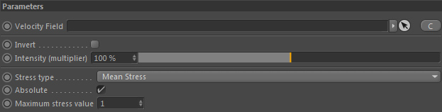

Parameters
Parameters

Velocity Field
Drop a fluid/liquid dynamics (which contain a velocity field) in here for measuring the strain rate of the flow.
Stress type
The type of flow stress (= energy arising during shape deformation of a material) to measure.
1. Mean Stress - The average stress of the flow
2. Von Mises Shear Stress - The shear stress after von Mises stress theory.
3. Normal Stress X/Y/Z - returns any arising stresses along the the material surface normal
4. Shear Stress X/Y/Z - returns any arising stresses along the material surface tangents
Absolute
Activate to let the constraint only return positive values.
Maximum stress value
The maximum stress value this constraint should consider (in positive or negative cases).